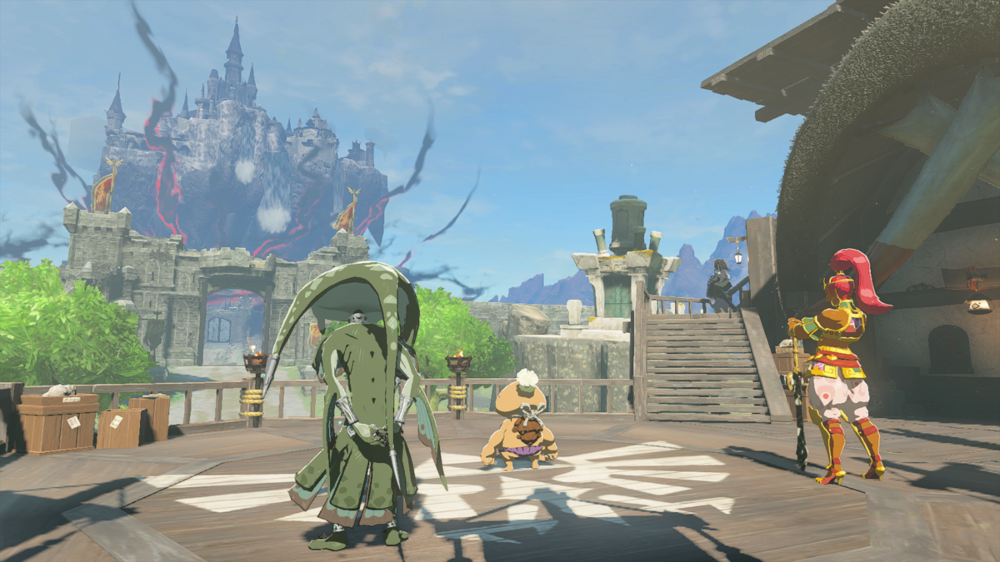

图：游戏实机截图——林克与露珠结下雷之贤者的誓言（图片来源：Zelda Wiki，本站自托管图片）。
先说结论：这座神殿难在哪
雷之神殿是格鲁德沙漠里的一座金字塔，平时埋在沙子底下，得先在格鲁德小镇南边的遗迹解开三柱光线谜题，它才会升出沙面。难点不在解谜本身，而在三件事：第一，殿内机关全是光和电——镜子要折光、蓄电池要充电，缺了露珠的雷电寸步难行；第二，沙子到处都是，宝箱、按钮、通道全埋在沙堆底下，得用科罗格扇叶一片片吹开；第三，Boss 吉波多女王只有元素攻击能破甲，半血后还会放五个沙龙卷、开四个巢穴往外放吉波多，先清巢穴再打本体，顺序错了会被围死。打完拿心之容器和雷之贤者誓言。
前置与准备：沙漠温差大，两套料理都要带
进神殿之前，先把主线“格鲁德小镇的露珠”做到露珠加入队伍。没有她，电池一座也充不上。
- 耐热料理和防寒料理都要带：格鲁德沙漠白天酷热、夜里严寒，温差极大。两套料理都备上，别只带一种，半夜赶路会冻掉血。
- 箭、炸弹花、元素材料：充电池要射箭，打女王要元素攻击，吉波多要用火和电破甲。炸弹花箭清巢穴最好用，基斯之眼做的追踪箭打乱跑的 Boss 很好用。
- 科罗格扇叶：神殿里到处是沙堆，扇叶是吹沙的专用工具，现场就有，看到沙堆就吹，别绕过去。
- 回血食物：女王战是持久战，沙龙卷和吉波多围攻都很耗血，多带点回血料理。
三柱光线谜题：让金字塔升出沙面
跟着主线打过卡拉卡拉集市和格鲁德小镇的防线后，去格鲁德小镇南边的遗迹。那里有三根石柱和一座雕像，谜题就一句：对准雕像顶部，让露珠放一道雷。雷光亮起三根石柱，远处的沙漠里，一座金字塔缓缓升出沙面——那就是雷之神殿。
走到金字塔门口，先别急着进：门口堵着一个粉红色的巢穴，对准它激活露珠的雷电，再射一箭，巢穴一破，吉波多女王就会现身。这是一场遭遇战：用露珠的雷电或者元素箭打她，她的甲一破就会变白，趁变白近战输出，把她打退之后才能进门。进门先触碰终端，建传送点，四座蓄电池的位置随即标在地图上。

图：游戏实机截图——四地区异变主线从瞭望台着陆点展开，雷之神殿是其中的格鲁德一环（图片来源：Zelda Wiki，本站自托管图片）。
镜子与光线机关：先看懂再动手
雷之神殿的机关就两种：镜子和电池，两种都离不开光和电。先把规则看懂，后面四座蓄电池全是这套规则的变体。
- 镜子折光：用究极手搬动左纳乌镜子，把房间中央的光束折到门上的绿色圆环或者六边形靶子上，靶子一亮，门就开了。镜子别乱搬，先看光从哪来、靶子在哪，搬一次对准一次。
- 沙堆与按钮：沙堆底下常藏着按钮或者宝箱，用科罗格扇叶吹开沙堆，露出按钮后站上去，门就开了。看到沙堆就吹，别绕过去，绕过去等于漏东西。
- 蓄电池充能：激活露珠的雷电，等雷电场张开，对准场内的蓄电池射一箭，电池就充上了。箭必须射在雷电场里，露珠离得太远、场子没罩住电池，射了也白射。
四座蓄电池逐个解法
四座蓄电池没有固定顺序，卡住就换一座。充完一座，对应的区域就打开，最后回升天之间触碰终端，坐升降梯上七层打 Boss。
| 蓄电池 | 位置 | 关键操作 |
|---|---|---|
| 第一座 | 一层右后方 | 绿色圆环后的房间，红石板与陶罐后面，雷电场内射箭充能 |
| 第二座 | 一层镜面房间 | 究极手搬镜子，把光折到六边形靶子上开平台，再充能 |
| 第三座 | 希望之光之间 | 扇叶吹开沙堆，搬镜子接光，打开西南侧间的门 |
| 第四座 | 献光之间附近 | 通天术上高处，镜子折光开门，再充能 |
第一座：一层右后方，红石板后面
进门往右后方走，绿色圆环后面有间房，地上摆着两块红石板和两个陶罐。蓄电池就在里面：激活露珠的雷电，等雷电场罩住电池，射一箭，充能完成。陶罐可以砸，里面常有箭和材料。
第二座：一层，镜子折光开平台
这间房中央有一道光束，旁边放着左纳乌镜子。用究极手抓起镜子，转动角度把光折到墙上的六边形靶子上，靶子一亮，平台升起来，露出第二座蓄电池。同样是露珠雷电场内射箭充能。
第三座：希望之光之间，吹沙加折光
希望之光之间里沙堆最多。先拿扇叶把地上的沙堆吹开，露出藏着的按钮和通道；再搬镜子把光引到门上的靶子，打开西南侧间的门，第三座蓄电池就在里面。这一间最容易漏东西，沙堆要一片片吹，别急着走。
第四座：献光之间附近，通天术上高处
最后一座在高处。从二层往献光之间方向走，楼梯旁的雕像附近找个能通天术的位置上去，或者用镜子折光开出一条路。充完第四座蓄电池，回升天之间触碰终端，坐升降梯上七层。
Boss：吉波多女王
坐升降梯上七层，吉波多女王在等你。这是她第二次出现，门口那次只是热身。她的甲只有元素攻击能破，露珠的雷电最稳，火属性箭和电属性箭也可以。
1元素攻击破甲：激活露珠的雷电，对着女王射一箭，或者直接用元素箭打她。甲一破她全身变白，这时才能打出伤害，冲上去近战输出。
2躲沙龙卷：她会放出三道沙龙卷在场地上转，保持移动，别站在龙卷的路线上。龙卷速度不快，走位就能躲。
3半血后先清巢穴：血量过半，她放出五道沙龙卷，同时激活场边的四个巢穴，开始往外放吉波多。这时别追着女王打，先打巢穴：露珠的雷电或者炸弹花箭，一个巢穴几下就破。巢穴不清，吉波多越放越多。
4追踪箭收尾：巢穴清完再回头打女王。她乱跑的时候用基斯之眼做的追踪箭射她，命中就破甲，再冲上去输出。重复破甲加输出的循环，就能打赢。
这场 Boss 战的要点是“先清场再输出”：巢穴不清理，你追不上女王，她还越放越多。露珠的雷电有冷却，别乱放，留给破甲和清巢穴。女王变白的时间很短，破甲成功就立刻冲上去，别在远处磨蹭。
七座宝箱全收集
雷之神殿一共七座宝箱，其中两座是随进度变化的武器装备，开出来的名字可能和下面写的不一样。坐标是游戏内坐标，按这个表顺路开。
| 宝箱内容 | 位置 | 坐标 |
|---|---|---|
| 大左纳乌能源结晶 | B1 入口左侧桥边的缺口里 | -4513, -3613, -0015 |
| 黄玉 | B1 墓室石块后面 | -4534, -3635, -0003 |
| 左纳乌盾（随进度变化） | B1 隐藏房间 | -4686, -3665, -0006 |
| 士兵弓（随进度变化） | 希望之光之间西南侧间的废墟上 | -4620, -3717, 0008 |
| 火焰喷射器 | 1F 入口右侧沙堆底下 | -4419, -3492, 0028 |
| 钻石 | 4F 孤立房间，2F 与献光之间楼梯旁雕像处用通天术上去 | -4535, -3585, 0064 |
| 镜子×3 | 神殿顶部沙堆底下 | -4517, -3610, 0179 |
除了宝箱，神殿里还有些散落的物品：火墙后的小裂缝里有一把格鲁德长枪，拿出来就能用。打完 Boss 再回头开宝箱也行，神殿打完不会锁门。
奖励与后续：雷之贤者誓言
打完吉波多女王，拿一颗心之容器，再和露珠对话，得到雷之贤者誓言。露珠回格鲁德小镇继承族长之位，之后可以随时召唤她。她的雷之力平时也很好用：远程引雷打敌人、给蓄电池充电，遇到带电机关就想起她。四座神殿没有固定顺序，雷之神殿打完之后，去风、水、火任意一座都可以，贤者能力是叠加的，集得越多越顺。
哈里的取舍：三件容易翻车的事
第一，蓄电池先充离升天之间近的。四座电池顺序随意，但先充离升天之间近的，充完回终端的路最短，万一死了重跑也不远。别一进门就往最深处钻。
第二，巢穴优先于本体。女王半血后，很多人盯着本体追，结果被吉波多围死。先打四个巢穴，场地干净了再打女王；巢穴用炸弹花箭最快，露珠的雷电留给破甲。
第三，镜子别乱搬，记住光路。镜子一搬，光就断了。搬之前先看清光从哪来、靶子在哪，一次对准。来回搬镜子是最浪费时间的事，也是最容易卡住的地方。
一句话总结
先在小镇南边遗迹点亮三柱，让金字塔升出沙面，门口打退吉波多女王进门，镜子折光开门、四座蓄电池逐个充能——红石板后、六边形靶子、希望之光之间、献光之间——上七层，元素攻击破甲、半血先清四个巢穴，拿心之容器和露珠的誓言走人。